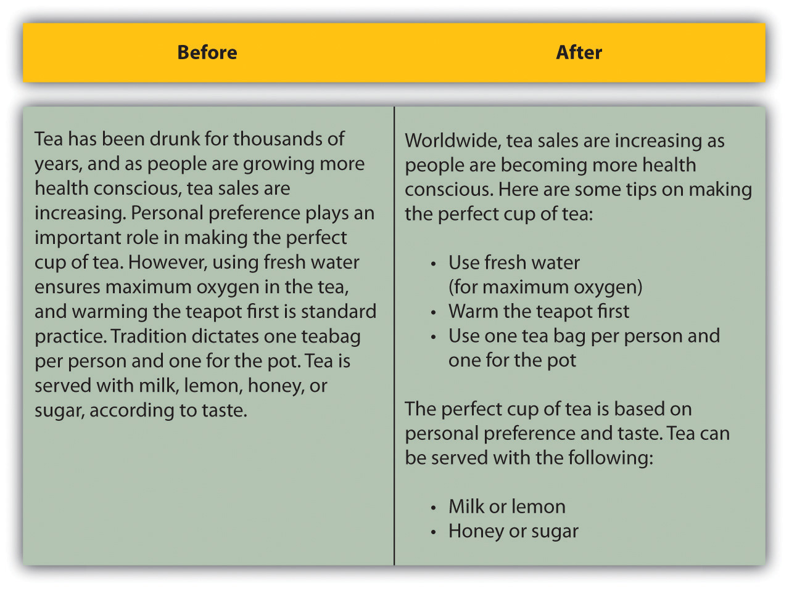
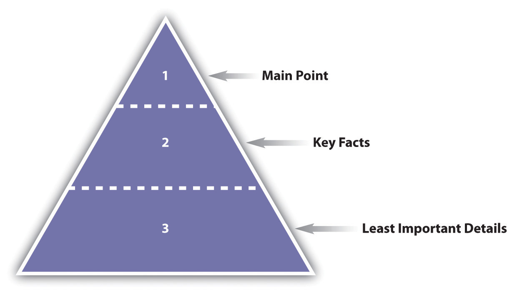

When writing for the Web, it does not mean that traditional approaches to copywriting need to be ditched. The foundations remain—they just need to be adapted to an online environment. The first step you need to take is to research your target audience, understand their needs, and write copy that solves their problems and answers their questions while engaging with them.
Understanding your audience will guide you in determining the topics that they want to read about and will help you to organize information in a way that makes sense to your audience. It will direct the tone of your copy as well as the content.
Sometimes it helps to write for just one person. Pick out someone you know who fits your audience, or make someone up, and write for that person. In copywriting, this person who fits your audience is a personaA character used to represent a group of visitors to a Web site..
The Internet has led to an audience of one.Jonathan Price and Lisa Price, Hot Text: Web Writing That Works (Indianapolis: New Riders, 2002). What does this mean? While your audience is not literally one person (and if it is, thank your mom for reading your Web site, but spend some time on growing your readership), it is not a vast, vaguely defined crowd. Instead, online we have many niche audiences who are used to being addressed as individuals. Online, many of the individuals in our audience also exchange information via blogs, forums, and other forms of social media.
Holly Buchanan of FutureNow (http://www.futurenowinc.com) sums this up with three questions you should ask:
Personas are based on the profile of readers of your copy—the visitors to your Web site and potential customers. Creating a profile is all about considering the needs and desires of your Web site visitors and effectively meeting them. For example, How do they make purchase decisions? Do they compare lots of service providers before selecting one? Do they make lists of questions and call in for assistance with decision making? Or do they make purchase decisions spontaneously based on a special offer?
Web site copy can be structured in such a way that it caters for several personas, but you need to spend time understanding their needs before you are able to write copy that addresses these needs with conviction.
Understanding the profiles of your readers is an important element, and the best copy usually results from extensive time spent figuring out who your audience is.
When writing on behalf of clients, it is very important that you have clearly understood what their corporate “personality” is so that you can convey this in your copy without deviating from their corporate identity or diluting their brand ethos.
Writing an online copy—guidelines document will enable you to fall back on the styles, conventions, and voice that you are required to write for. Understanding and sticking to this corporate voice is just as important as the audience you are tailoring your content for. The two need to work together and draw from one another for direction.
By sticking to style conventions, you will assist the audience in familiarizing themselves with author personas. This way, they will know what bits of content go where in a document, and this allows for easier navigation.
Online copy is judged first and foremost on its layout, regardless of the content. It needs to appear to be well structured and easy to read before a visitor will choose to read it.
A good online copywriter will also be able to use basic HTML (hypertext markup language), knowing that it is the appealing layout of the page that will get their words read. It should be easy for users to skip and skim the copy, effortlessly finding the parts that are most relevant to them.
Online copy should be pleasant to read and easy to scan. This means making use of the following:
It’s easy to see this in practice.
Figure 14.1 What Text Looks Like after It Has Been Edited for Online
Readers online are usually strapped for time and need to decide quickly whether or not to read a page. This means that the most important information needs to be at the top of the page. Start with the summary or conclusion—the main idea or gist of the article.
Figure 14.2 The Structure of Online Copy
While clever wordplay in headings and titles can attract some attention, online these need to be written as descriptively as possible. The copy is multitasking: not only is it informing visitors of what to expect, it is also telling search engine spiders what the page is about. Be creative, but keep it relevant.
HTML stands for hypertext markup language, and it’s the foundation of documents on the Internet. HTML tags tell browsers how to present content. HTML tags are in the brackets that look like arrows: < and >.
When writing online copy, you can use an HTML editor, where you insert the tags yourself, or a WYSIWYG (What You See Is What You Get) editor, which works in a similar way to a word processor.
Basic HTML is simple to implement and will help you to lay out your content in an easy-to-read way. Here are some basic HTML tags:
The tags also help search engines to identify how the content has been laid out on the page.
The best way to get to grips with HTML is to start using it online where you can see how the tags work.